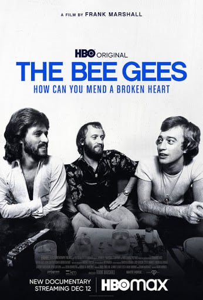
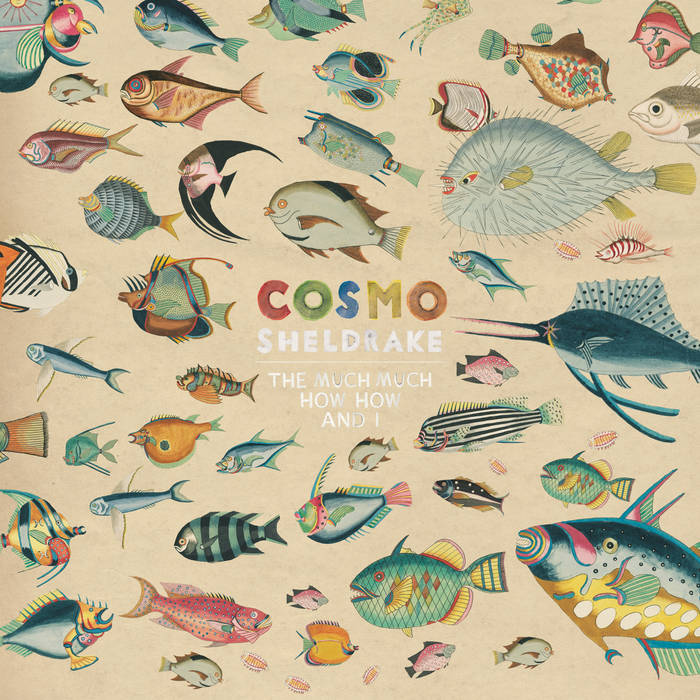

Rachel:
On Beauty,
Zadie Smith
David:
Garden, Ashes,
Danilo Kiš
Sneha:
The Scapegracers,
Hannah Abigail Clarke
Morgan Strunsky
editorial associate
Mimi Li
senior editor
Go to Mimi’s pick


Isabel Wilkerson has followed up her fantastic The Warmth of Other
Suns with an eye-opening look at the history of race relations in the United States. I'd recommend Caste: The Origins of Our Discontents if
you want to better understand how we've ended up where we are today. One interviewee asks, pre–presidential election, “If people were given the choice between democracy and whiteness, how many would choose whiteness?”
Allan Gold
senior adviser
Go to Allan’s pick
Jen Bulat
managing editor
Go to Jen’s pick


I recently discovered the album The Much Much How How & I, which was released in early 2018 by British vocalist and instrumentalist Cosmo Sheldrake, and I’ve been playing it nonstop since. This is not your standard Hot 100 fare. Sheldrake’s music sounds like a spiritual successor to Camille Saint-Saëns’ work—but for abandoned carnivals. It is at once familiar and alien, comforting and unsettling—blending orchestral instrumentation with fanciful lyrics, odd time signatures, and catchy hooks. This album could be the soundtrack to Alice in Wonderland, and I highly recommend it to anyone craving a bit of the peculiar.
As someone who grew up in the ’70s and ’80s, I knew the Bee Gees (Barry, Robin, and Maurice Gibb) mostly from their five ridiculously catchy songs on the Saturday Night Fever soundtrack. The Bee Gees: How Can You Mend a Broken Heart, a nearly two-hour HBO documentary, educated me on how much more there was to the brothers Gibb—including their younger brother, Andy, who had three No. 1 hits of his own in the late ’70s. Only Barry remains, and the documentary makes painfully clear how much he misses his three younger brothers.
An Arm and a Leg is a podcast about the cost of health insurance in the United States. Depending on your (conscious or unconscious) beliefs about fairness, money, risk, and negotiation, you'll find it some combination of fascinating, enraging, and so frightening it’s repulsive. And, yes, it does have stories about people who have, to varying degrees of success, dealt with medical bills related to the COVID-19 pandemic.

Our favorite books about growing up:
Annie:
The Power of One,
Bryce Courtenay

Who doesn’t love a fresh start? I’m doing my best to push past the upheaval and anxiety and bleakness of 2020 and embrace the newness of this year as a chance to change my perspective. We’ve got tips on what to read, watch, and listen to that might help bring a new perspective—on our social hierarchy, our healthcare system, and our favorite music.

Go to Morgan’s pick
